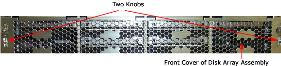
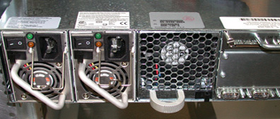
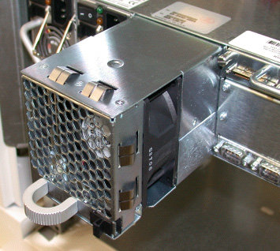

Proprietary to General Electric
Direction 5193575-800, Rev# 5
LightSpeed 7.X Service Information - Adv
Proprietary to General Electric |
| Required Persons | Preliminary Reqs | Procedure | Finalization |
|---|---|---|---|
| 1 | Timing Not Applicable | 35 mins | 20 mins |
This module contains the following replacement procedures for the GOC5 VCT Operator Console Disk Array:
Replace Whole Disk Array (JBOD)
(Perform only if applicable)
Replace the Scan Data Disk Drive (with sled)
(Perform only if applicable)
(Perform only if applicable)
(Perform only if applicable)
(Perform only if applicable)
| Last Revised: | 6 September 2006 |
| Item | Qty | Effectivity | Part# | Manufacturer | |
|---|---|---|---|---|---|
| Medium Phillips Screwdriver | 1 | - | - | - | |
| Item | Qty | Effectivity | Part# | Manufacturer | |
|---|---|---|---|---|---|
| Disk Array (JBOD) | 1 (AR) | - | - | - | |
| Scan Data Disk Drive (with sled) | 1-8 (AR) | - | - | - | |
| SAF-TE controller | 1 (AR) | - | - | - | |
| Power Supplies | 2 (AR) | - | - | - | |
| Fan Module | 1 (AR) | - | - | - | |
| All cable connector screw-locks must be finger-tightened, only. Do NOT use any tool to tighten cable screw-locks. | |
| Condition | Reference | Eff |
|---|---|---|
Only trained service personnel should service the GE CT Scanner. | - | - |
Understand the conventions used in this publication | - |
Select one of the following methods to Power OFF the Operator Console:
If Applications are up, select the Shut Down icon and then select [Shutdown] .
| (For 06MW03.X Software) Wait 1-2 minutes after the “System halted” message appears, to allow the DARC Node to properly power-down. Future SW releases (e.g., 06MW29.x) have corrected this issue. | |
If Applications are down, open a Unix Shell at the Toolchest. Type:
{ctuser@hostname} halt
The Operator Console monitor will display a System halted message when it is acceptable to power OFF the Operator Console.
Power OFF the Operator Console at the front panel switch. (Refer to Illustration 1.)
Illustration 1: Power Switch

Remove the front and rear Operator Console cover.
Remove all rear cable connection to the Disk Array (JBOD). Verify each cable is present and clearly marked, if necessary add a label for clarity.
Remove the front cover of the Disk Array (JBOD)
Turn the two (2) knobs on the front cover to the horizontal position, then remove the Disk Array front cover.
Illustration 2: Disk Array Front Cover

Remove and retain the four (4) front mounting screws.
| Failure to return the disks to their proper location will result in potential lost patient raw data. | |
Remove each disk from the JBOD assembly individually, and clearly mark them so that they can be returned to the same slot location in the new replacement JBOD.
Remove each disk or empty sled as shown in Illustration 3.
Label each disk as shown in Illustration 4.
Illustration 3: Remove Individual Drives

Illustration 4: Disk Numbering

Slide out the Disk Array Chassis (JBOD).
Install the replacement Disk Array (JBOD) in the Operator Console.
Slide the Disk Array (JBOD) into the Operator Console.
| Failure to return the disks to their proper location will result in potential lost patient raw data. | |
Return each Disk or empty sled to its proper position inside the Disk Array (JBOD) chassis.
Replace the four (4) front mounting screws on the front of the Disk Array (JBOD).
Replace the front cover screen to the Disk Array (JBOD) assembly.
See Illustration 2.
| All cable connector screw-locks must be finger-tightened, only. Do NOT
use any tool to tighten cable screw-locks. Verify that the SCSI Cable is on straight. | |
Replace all rear cable connections to the Disk Array (JBOD).
Perform all Disk Array RAID Tests per Disk Array RAID Testing.
Continue with replacements, as necessary.
Select one of the following methods to Power OFF the Operator Console:
If Applications are up, select the Shut Down icon and then select [Shutdown] .
| (For 06MW03.X Software) Wait 1-2 minutes after the “System halted” message appears, to allow the DARC Node to properly power-down. Future SW releases (e.g., 06MW29.x) have corrected this issue. | |
If Applications are down, open a Unix Shell at the Toolchest. Type:
{ctuser@hostname} halt
The Operator Console monitor will display a System halted message when it is acceptable to power OFF the Operator Console.
Power OFF the Operator Console at the front panel switch. (Refer to Illustration 1.)
Remove the front Operator Console cover.
Remove the front cover of the Disk Array (JBOD):
Turn two knobs on the front cover to horizontal position, then take off the front cover from the Disk Array.
Illustration 5: Front Cover of Disk Array Assembly

Pull the Scan Disk Drive (with sled) out the Disk Array (JBOD).
Illustration 6: Remove Disk Drive (with Sled)
Insert new Scan Disk Driver (with sled) in the Disk Array (JBOD) at the original position of the old disk drive.
Replace the four (4) front mounting screws on the front of the Disk Array (JBOD).
Replace the front cover screen to the Disk Array (JBOD) assembly.
Power ON the Operator Console at the front switch.
At the VDARC Node verify the front panel Power LED is ON. If not, press the front panel power switch (hold 3-10 seconds) to apply power to the VDARC Node.
At the VIG Node verify the front panel Power LED is ON. If not, press the front panel power switch (hold 3-10 seconds) to apply power to the VIG Node.
At the Disk Array (JBOD) verify two green LEDs at rear panel is on. If not, press the two power switches at rear panel to apply power to the Disk Array (JBOD).
Stop Applications from auto-starting at the 5 second PINK Box.
Perform the Create, Assemble and Query Disk Array RAID Tests per Disk Array RAID Testing
Continue with replacements, as necessary.
Select one of the following methods to Power OFF the Operator Console:
Select one of the following methods to Power OFF the Operator Console:
If Applications are up, select the Shut Down icon and then select [Shutdown] .
| (For 06MW03.X Software) Wait 1-2 minutes after the “System halted” message appears, to allow the DARC Node to properly power-down. Future SW releases (e.g., 06MW29.x) have corrected this issue. | |
If Applications are down, open a Unix Shell at the Toolchest. Type:
{ctuser@hostname} halt
The Operator Console monitor will display a System halted message when it is acceptable to power OFF the Operator Console.
Power OFF the Operator Console at the front panel switch. (Refer to Illustration 1.)
Remove the rear Operator Console cover.
Remove the SCSI cables on the SAF-TE Controller at the rear of Disk Array (JBOD). Verify each cable is present and clearly marked, if necessary add a label for clarity.
Remove and retain two (2) screws and slide out the SAF-TE Controller.
Illustration 7: SAF-TE Controller
(Sheet 1 of 3)

(Sheet 2 of 3)

(Sheet 3 of 3)

| NOTE: | Never touch the PCB surface of the SAF-TE Controller. Hold it with the handle. |
Insert new SAF-TE Controller at the rear of Disk Array (JBOD).
| Installing the cables in the wrong position will result in patient raw data storage issues that could lead to potential patient misdiagnosis. | |
Replace all cable connections on the SAF-TE controller. Ensure that SCSI cable 1 and 2 are connected to their proper connectors.
| Do NOT perform the Create command or all data will be lost. | |
Perform the Assemble and Query Disk Array RAID Tests per Disk Array RAID Testing
Continue with replacements, as necessary.
Select one of the following methods to Power OFF the Operator Console:
Select one of the following methods to Power OFF the Operator Console:
If Applications are up, select the Shut Down icon and then select [Shutdown] .
| (For 06MW03.X Software) Wait 1-2 minutes after the “System halted” message appears, to allow the DARC Node to properly power-down. Future SW releases (e.g., 06MW29.x) have corrected this issue. | |
If Applications are down, open a Unix Shell at the Toolchest. Type:
{ctuser@hostname} halt
The Operator Console monitor will display a System halted message when it is acceptable to power OFF the Operator Console.
Power OFF the Operator Console at the front panel switch. (Refer to Illustration 1.)
Remove the rear Operator Console cover.
Remove the Fan Module by sliding the release lever to the left, and then pulling firmly straight out.
Illustration 8: Fan Module
(Sheet 1 of 2)

(Sheet 2 of 2)

Replace the Fan Module by sliding it into its enclosure until it snaps into place.
Power ON the Operator Console at the front switch.
At the VDARC Node verify the front panel Power LED is ON. If not, press the front panel power switch (hold 3 to 10 seconds) to apply power to the VDARC Node.
At the IG Node verify the front panel Power LED is ON. If not, press the front panel power switch (hold 3 to 10 seconds) to apply power to the VIG Node.
At the Disk Array (JBOD) verify two green LEDs at rear panel is on. If not, press the two power switches at rear panel to apply power to the Disk Array (JBOD).
| Do NOT perform the Create command or all data will be lost. | |
Perform the Assemble and Query Disk Array RAID Tests per Disk Array RAID Testing
Continue with replacements, as necessary.
Select one of the following methods to Power OFF the Operator Console:
Select one of the following methods to Power OFF the Operator Console:
If Applications are up, select the Shut Down icon and then select [Shutdown] .
| (For 06MW03.X Software) Wait 1-2 minutes after the “System halted” message appears, to allow the DARC Node to properly power-down. Future SW releases (e.g., 06MW29.x) have corrected this issue. | |
If Applications are down, open a Unix Shell at the Toolchest. Type:
{ctuser@hostname} halt
The Operator Console monitor will display a System halted message when it is acceptable to power OFF the Operator Console.
Power OFF the Operator Console at the front panel switch. (Refer to Illustration 1.)
Remove the rear Operator Console cover.
Turn OFF the Power Supply switch.
Remove the power cord from the power supply
Remove the defective Power Supply Module by sliding the release lever to the left, and pulling firmly straight out.
Illustration 9: JBOD Rear View, Showing Power Supplies (at Left)
Replace the Power Supply Module by sliding it into its enclosure until it snaps into place.
Replace the power cord to the power supply Module, and latch into place using the power cable clasp.
Turn ON the Power Supply Power switch, insuring that the green light is illuminated.
| Do NOT perform the Create command or all data will be lost. | |
Perform the Assemble and Query Disk Array RAID Tests per Disk Array RAID Testing.
Continue with replacements, as necessary.
Open a Unix Shell as root and type the following commands to verify 8 GByte disks are present. Additionally, /dev/md0 can be checked to see if /raw_data is mounted using the df or df /raw_data command.
{ctuser@hostname} rsh darc
{ctuser@darc} df
[root@darc] sg_map –i -x
Verify Disks and Mount State Command Output:
Table 1: Verify Disks and Mount State Command Output
{ctuser@hostname}[3] rsh darc
Last login: Thu Jul 27 12:39:59 from oc
[ctuser@darc ~]$ df
Filesystem 1K-blocks Used Available Use% Mounted on
/dev/hda2 4182720 2821880 1360840 68% /
/dev/hda1 101086 5107 90760 6% /boot
none 3117332 2242436 874896 72%
/dev/shm/dev/hda9 65625544 45340 65580204 1% /usr/g
/dev/md0 515938304 971744 514966560 1% /raw_data
[ctuser@darc ~]$ su –
Password: #bigguy
[root@darc ~]# sg_map -i -x
/dev/sg0 0 0 1 0 0 /dev/sda SEAGATE ST373454LC 0002
/dev/sg1 0 0 2 0 0 /dev/sdb SEAGATE ST373454LC 0002
/dev/sg2 0 0 4 0 0 /dev/sdc SEAGATE ST373454LC 0002
/dev/sg3 0 0 6 0 0 /dev/sdd SEAGATE ST373454LC 0002
/dev/sg4 0 0 15 0 3 nStor NexStor 4000S 2.02
/dev/sg5 1 0 1 0 0 /dev/sde SEAGATE ST373454LC 0002
/dev/sg6 1 0 2 0 0 /dev/sdf SEAGATE ST373454LC 0002
/dev/sg7 1 0 3 0 0 /dev/sdg SEAGATE ST373454LC 0002
/dev/sg8 1 0 5 0 0 /dev/sdh SEAGATE ST373454LC 0002
/dev/sg9 1 0 15 0 3 nStor NexStor 4000S 2.02
[root@darc ~]# cat /proc/scsi/scsi
Attached devices:
Host: scsi0 Channel: 00 Id: 01 Lun: 00
Vendor: SEAGATE Model: ST373454LC Rev: 0002
Type: Direct-Access ANSI SCSI revision: 03
Host: scsi0 Channel: 00 Id: 02 Lun: 00
Vendor: SEAGATE Model: ST373454LC Rev: 0002
Type: Direct-Access ANSI SCSI revision: 03
Host: scsi0 Channel: 00 Id: 04 Lun: 00
Vendor: SEAGATE Model: ST373454LC Rev: 0002
Type: Direct-Access ANSI SCSI revision: 03
Host: scsi0 Channel: 00 Id: 06 Lun: 00
Vendor: SEAGATE Model: ST373454LC Rev: 0002
Type: Direct-Access ANSI SCSI revision: 03
Host: scsi0 Channel: 00 Id: 15 Lun: 00
Vendor: nStor Model: NexStor 4000S Rev: 2.02
Type: Processor ANSI SCSI revision: 02
Host: scsi1 Channel: 00 Id: 01 Lun: 00
Vendor: SEAGATE Model: ST373454LC Rev: 0002
Type: Direct-Access ANSI SCSI revision: 03
Host: scsi1 Channel: 00 Id: 02 Lun: 00
Vendor: SEAGATE Model: ST373454LC Rev: 0002
Type: Direct-Access ANSI SCSI revision: 03
Host: scsi1 Channel: 00 Id: 03 Lun: 00
Vendor: SEAGATE Model: ST373454LC Rev: 0002
Type: Direct-Access ANSI SCSI revision: 03
Host: scsi1 Channel: 00 Id: 05 Lun: 00
Vendor: SEAGATE Model: ST373454LC Rev: 0002
Type: Direct-Access ANSI SCSI revision: 03
Host: scsi1 Channel: 00 Id: 15 Lun: 00
Vendor: nStor Model: NexStor 4000S Rev: 2.02
Type: Processor ANSI SCSI revision: 02
[root@darc ~]# cat /proc/scsi/aic79xx/{0,1}
Adaptec AIC79xx driver version: 1.3.11
Adaptec AIC7902 Ultra320 SCSI adapter
aic7902: Ultra320 Wide Channel A, SCSI Id=7, PCI-X 67-100Mhz, 512 SCBs
Allocated SCBs: 64, SG List Length: 128
Serial EEPROM:
0x17c8 0x17c8 0x17c8 0x17c8 0x17c8 0x17c8 0x17c8 0x17c8
0x17c8 0x17c8 0x17c8 0x17c8 0x17c8 0x17c8 0x17c8 0x17c8
0x09f4 0x0146 0x2807 0x0010 0xffff 0xffff 0xffff 0xffff0
xffff 0xffff 0xffff 0xffff 0xffff 0xffff 0x0430 0xb3f7
Target 0 Negotiation Settings
User: 320.000MB/s transfers (160.000MHz DT|IU|QAS, 16bit)
Target 1 Negotiation Settings
User: 320.000MB/s transfers (160.000MHz DT|IU|QAS, 16bit)
Goal: 320.000MB/s transfers (160.000MHz DT|IU|QAS, 16bit)
Curr: 320.000MB/s transfers (160.000MHz DT|IU|QAS, 16bit)
Transmission Errors 0
Channel A Target 1 Lun 0 Settings
Commands Queued 7659
Commands Active 0
Command Openings 32
Max Tagged Openings 32
Device Queue Frozen Count 0
Target 2 Negotiation Settings
User: 320.000MB/s transfers (160.000MHz DT|IU|QAS, 16bit)
Goal: 320.000MB/s transfers (160.000MHz DT|IU|QAS, 16bit)
Curr: 320.000MB/s transfers (160.000MHz DT|IU|QAS, 16bit)
Transmission Errors 0
Channel A Target 2 Lun 0 Settings
Commands Queued 7647
Commands Active 0
Command Openings 32
Max Tagged Openings 32
Device Queue Frozen Count 0
Target 3 Negotiation Settings
User: 320.000MB/s transfers (160.000MHz DT|IU|QAS, 16bit)
Target 4 Negotiation Settings
User: 320.000MB/s transfers (160.000MHz DT|IU|QAS, 16bit)
Goal: 320.000MB/s transfers (160.000MHz DT|IU|QAS, 16bit)
Curr: 320.000MB/s transfers (160.000MHz DT|IU|QAS, 16bit)
Transmission Errors 0
Channel A Target 4 Lun 0 Settings
Commands Queued 7756
Commands Active 0
Command Openings 32
Max Tagged Openings 32
Device Queue Frozen Count 0
Target 5 Negotiation Settings
User: 320.000MB/s transfers (160.000MHz DT|IU|QAS, 16bit)
Target 6 Negotiation Settings
User: 320.000MB/s transfers (160.000MHz DT|IU|QAS, 16bit)
Goal: 320.000MB/s transfers (160.000MHz DT|IU|QAS, 16bit)
Curr: 320.000MB/s transfers (160.000MHz DT|IU|QAS, 16bit)
Transmission Errors 0
Channel A Target 6 Lun 0 Settings
Commands Queued 7597
Commands Active 0
Command Openings 32
Max Tagged Openings 32
Device Queue Frozen Count 0
Target 7 Negotiation Settings
User: 320.000MB/s transfers (160.000MHz DT|IU|QAS, 16bit)
Target 8 Negotiation Settings
User: 320.000MB/s transfers (160.000MHz DT|IU|QAS, 16bit)
Target 9 Negotiation Settings
User: 320.000MB/s transfers (160.000MHz DT|IU|QAS, 16bit)
Target 10 Negotiation Settings
User: 320.000MB/s transfers (160.000MHz DT|IU|QAS, 16bit)
Target 11 Negotiation Settings
User: 320.000MB/s transfers (160.000MHz DT|IU|QAS, 16bit)
Target 12 Negotiation Settings
User: 320.000MB/s transfers (160.000MHz DT|IU|QAS, 16bit)
Target 13 Negotiation Settings
User: 320.000MB/s transfers (160.000MHz DT|IU|QAS, 16bit)
Target 14 Negotiation Settings
User: 320.000MB/s transfers (160.000MHz DT|IU|QAS, 16bit)
Target 15 Negotiation Settings
User: 320.000MB/s transfers (160.000MHz DT|IU|QAS, 16bit)
Goal: 6.600MB/s transfers (16bit)
Curr: 6.600MB/s transfers (16bit)
Transmission Errors 0
Channel A Target 15 Lun 0 Settings
Commands Queued 1369
Commands Active 0
Command Openings 1
Max Tagged Openings 0
Device Queue Frozen Count 0
Adaptec AIC79xx driver version: 1.3.11
Adaptec AIC7902 Ultra320 SCSI adapter
aic7902: Ultra320 Wide Channel B, SCSI Id=7, PCI-X 67-100Mhz, 512 SCBs
Allocated SCBs: 56, SG List Length: 128
Serial EEPROM:
0x17c8 0x17c8 0x17c8 0x17c8 0x17c8 0x17c8 0x17c8 0x17c8
0x17c8 0x17c8 0x17c8 0x17c8 0x17c8 0x17c8 0x17c8 0x17c8
0x09f4 0x0146 0x2807 0x0010 0xffff 0xffff 0xffff 0xffff
0xffff 0xffff 0xffff 0xffff 0xffff 0xffff 0x0430 0xb3f7
Target 0 Negotiation Settings
User: 320.000MB/s transfers (160.000MHz DT|IU|QAS, 16bit)
Target 1 Negotiation Settings
User: 320.000MB/s transfers (160.000MHz DT|IU|QAS, 16bit)
Goal: 320.000MB/s transfers (160.000MHz DT|IU|QAS, 16bit)
Curr: 320.000MB/s transfers (160.000MHz DT|IU|QAS, 16bit)
Transmission Errors 0
Channel A Target 1 Lun 0 Settings
Commands Queued 7705
Commands Active 0
Command Openings 32
Max Tagged Openings 32
Device Queue Frozen Count 0
Target 2 Negotiation Settings
User: 320.000MB/s transfers (160.000MHz DT|IU|QAS, 16bit)
Goal: 320.000MB/s transfers (160.000MHz DT|IU|QAS, 16bit)
Curr: 320.000MB/s transfers (160.000MHz DT|IU|QAS, 16bit)
Transmission Errors 0
Channel A Target 2 Lun 0 Settings
Commands Queued 7647
Commands Active 0
Command Openings 32
Max Tagged Openings 32
Device Queue Frozen Count 0
Target 3 Negotiation Settings
User: 320.000MB/s transfers (160.000MHz DT|IU|QAS, 16bit)
Goal: 320.000MB/s transfers (160.000MHz DT|IU|QAS, 16bit)
Curr: 320.000MB/s transfers (160.000MHz DT|IU|QAS, 16bit)
Transmission Errors 0
Channel A Target 3 Lun 0 Settings
Commands Queued 7558
Commands Active 0
Command Openings 32
Max Tagged Openings 32
Device Queue Frozen Count 0
Target 4 Negotiation Settings
User: 320.000MB/s transfers (160.000MHz DT|IU|QAS, 16bit)
Target 5 Negotiation Settings
User: 320.000MB/s transfers (160.000MHz DT|IU|QAS, 16bit)
Goal: 320.000MB/s transfers (160.000MHz DT|IU|QAS, 16bit)
Curr: 320.000MB/s transfers (160.000MHz DT|IU|QAS, 16bit)
Transmission Errors 0
Channel A Target 5 Lun 0 Settings
Commands Queued 7560
Commands Active 0
Command Openings 32
Max Tagged Openings 32
Device Queue Frozen Count 0
Target 6 Negotiation Settings
User: 320.000MB/s transfers (160.000MHz DT|IU|QAS, 16bit)
Target 7 Negotiation Settings
User: 320.000MB/s transfers (160.000MHz DT|IU|QAS, 16bit)
Target 8 Negotiation Settings
User: 320.000MB/s transfers (160.000MHz DT|IU|QAS, 16bit)
Target 9 Negotiation Settings
User: 320.000MB/s transfers (160.000MHz DT|IU|QAS, 16bit)
Target 10 Negotiation Settings
User: 320.000MB/s transfers (160.000MHz DT|IU|QAS, 16bit)
Target 11 Negotiation Settings
User: 320.000MB/s transfers (160.000MHz DT|IU|QAS, 16bit)
Target 12 Negotiation Settings
User: 320.000MB/s transfers (160.000MHz DT|IU|QAS, 16bit)
Target 13 Negotiation Settings
User: 320.000MB/s transfers (160.000MHz DT|IU|QAS, 16bit)
Target 14 Negotiation Settings
User: 320.000MB/s transfers (160.000MHz DT|IU|QAS, 16bit)
Target 15 Negotiation Settings
User: 320.000MB/s transfers (160.000MHz DT|IU|QAS, 16bit)
Goal: 6.600MB/s transfers (16bit)
Curr: 6.600MB/s transfers (16bit)
Transmission Errors 0
Channel A Target 15 Lun 0 Settings
Commands Queued 1369
Commands Active 0
Command Openings 1
Max Tagged Openings 0
Device Queue Frozen Count 0
[root@darc ~]# |
| NOTE: | A special create command (sudo gre-raid -c –z)
is available for sites that experience issues with the individual disk drive
(a good drive the system has tagged as bad). This command still destroys all
data by repartitioning or creating the Disk Array. Additionally, it erases
the Disk drive serial numbers for the Disk Array (JBOD) allowing reuse of
a Disk Drive. Do not use this command on intermittent or faulty Disk Drives.
Replace bad Disk Drives. Do Not perform this command if Patient data is not
fully backed up. Application Software must be down to perform the create command
for the Disk Array. For remote troubleshooting, verify that you are at the ctuser@darc prompt, not the insite prompt. |
Open a Unix Shell and type the following:
| NOTE: | The create command (sudo gre-raid -c) destroys all data by repartitioning or creating the Disk Array. Do Not perform this command if Patient data is not fully backed up. Application Software must be down to perform the create command for the Disk Array. |
{ctuser@hostname} rsh darc
{ctuser@darc} sudo gre-raid -c
************************** Warning ****************************** * If a new disk array is created, all scan data on the current * * disk array will be lost. * *****************************************************************
Are you sure you want to create a new disk array (yes/no)? yes
Table 2: Create Command Output
{ctuser@hostname}[1] rsh darc
Last login: Mon Jul 24 17:03:43 from oc
[ctuser@darc ~]$ sudo gre-raid -c
gre-raid: built Jul 26 2006 01:25:35
/dev/sd<x>: scanning disk array...done
Device Bus ID Mfg Model Fwrev Serial-number
/dev/sda 0 1 SEAGATE ST373454LC 0002 3KP27DK800007629V19S
/dev/sdb 0 2 SEAGATE ST373454LC 0002 3KP1TAA90000761881Q9
/dev/sdc 0 4 SEAGATE ST373454LC 0002 3KP295VT000076294WNX
/dev/sdd 0 6 SEAGATE ST373454LC 0002 3KP1RTLP000076189Z4Z
/dev/sde 1 1 SEAGATE ST373454LC 0002 3KP29XKX000076297ACR
/dev/sdf 1 2 SEAGATE ST373454LC 0002 3KP1T1C3000076189XFY
/dev/sdg 1 3 SEAGATE ST373454LC 0002 3KP1T31D000076187YRP
/dev/sdh 1 5 SEAGATE ST373454LC 0002 3KP29XX3000076297ADA
Adaptec driver not found. Continuing...
dasType: VDAS_64
/usr/g/config/gre-raid-8.cfg: RAID-0 profile
/raw_data: unmounting filesystem...done
/dev/md0: stopping...done
/var/log/messages: checking for SCSI errors...done
************************** Warning ******************************
* If a new disk array is created, all scan data on the current *
* disk array will be lost. *
*****************************************************************
Are you sure you want to create a new disk array (yes/no)? yes
/var/log/messages: 0 drive(s) found with SCSI errors found since last start
/dev/sda: testing...52.8MB/sec...done
/dev/sdb: testing...52.5MB/sec...done
/dev/sdc: testing...52.6MB/sec...done
/dev/sdd: testing...52.6MB/sec...done
/dev/sde: testing...52.8MB/sec...done
/dev/sdf: testing...52.7MB/sec...done
/dev/sdg: testing...52.4MB/sec...done
/dev/sdh: testing...52.8MB/sec...done
/dev/sda: partitioning...done
/dev/sdb: partitioning...done
/dev/sdc: partitioning...done
/dev/sdd: partitioning...done
/dev/sde: partitioning...done
/dev/sdf: partitioning...done
/dev/sdg: partitioning...done
/dev/sdh: partitioning...done
/dev/md0: creating disk array...done
/dev/md0: RAID-0 active with (8) drives, 256k chunk size, and 493GB capacity
/dev/md0: creating filesystem...done
/raw_data: mounting /dev/md0 filesystem...done
/raw_data: testing...407.6MB/sec...done
/raw_data: 0.0% used, 492.0GB avail
gre-raid: success
[ctuser@darc ~]$ |
Verify the create partitions diagnostic passes and all output looks good.
Perform the assemble and query commands if the create has been successful.
Open a Unix Shell and type the following:
| NOTE: | Application Software must be down to perform the assemble commands
for the Disk Array. The Operator Console can not be scanning or manipulating
Scan Data during the testing. For remote troubleshooting, verify that you are at the ctuser@darc prompt, not the insite prompt. |
{ctuser@hostname} rsh darc
{ctuser@darc} sudo gre-raid -a
Table 3: Assemble Command Output
{ctuser@hostname}[1] rsh darc
Last login: Mon Jul 24 17:03:43 from oc
[ctuser@darc ~]$ sudo gre-raid -a
gre-raid: built Jul 26 2006 01:25:35
/dev/sd<x: scanning disk array...done
Device Bus ID Mfg Model Fwrev Serial-number
/dev/sda 0 1 SEAGATE ST373454LC 0002 3KP27DK800007629V19S
/dev/sdb 0 2 SEAGATE ST373454LC 0002 3KP1TAA90000761881Q9
/dev/sdc 0 4 SEAGATE ST373454LC 0002 3KP295VT000076294WNX
/dev/sdd 0 6 SEAGATE ST373454LC 0002 3KP1RTLP000076189Z4Z
/dev/sde 1 1 SEAGATE ST373454LC 0002 3KP29XKX000076297ACR
/dev/sdf 1 2 SEAGATE ST373454LC 0002 3KP1T1C3000076189XFY
/dev/sdg 1 3 SEAGATE ST373454LC 0002 3KP1T31D000076187YRP
/dev/sdh 1 5 SEAGATE ST373454LC 0002 3KP29XX3000076297ADA
Adaptec driver not found. Continuing...
dasType: VDAS_64
/usr/g/config/gre-raid-8.cfg: RAID-0 profile
/raw_data: unmounting filesystem...done
/dev/md0: stopping...done
/var/log/messages: checking for SCSI errors...done
/var/log/messages: 0 drive(s) found with SCSI errors found since last start
/dev/sda: testing...52.5MB/sec...done
/dev/sdb: testing...52.5MB/sec...done
/dev/sdc: testing...52.8MB/sec...done
/dev/sdd: testing...52.6MB/sec...done
/dev/sde: testing...52.8MB/sec...done
/dev/sdf: testing...52.6MB/sec...done
/dev/sdg: testing...52.7MB/sec...done
/dev/sdh: testing...52.8MB/sec...done
/dev/md0: starting...done
/dev/md0: RAID-0 active with (8) drives, 256k chunk size, and 493GB capacity
/raw_data: mounting /dev/md0 filesystem...done
/raw_data: testing...409.8MB/sec...done
/raw_data: 0.0% used, 492.0GB avail
gre-raid: success
[ctuser@darc ~]$ |
Verify assemble diagnostic passes and all output looks good.
Perform the query command if the assemble has been successful.
Open a Unix Shell and type the following:
| NOTE: | A query can be performed at any time with Application software
up or down. The preferred method is to test with Application software down.
The Operator Console can not be scanning or manipulating Scan Data during
the testing. For remote troubleshooting, verify that you are at the ctuser@darc prompt, not the insite prompt. |
{ctuser@hostname} rsh darc
{ctuser@darc} sudo gre-raid -q
Table 4: Query Command Output
{ctuser@hostname}[1] rsh darc
Last login: Mon Jul 24 17:03:43 from oc
[ctuser@darc ~]$ sudo gre-raid -q
gre-raid: built Jul 26 2006 01:25:35
/dev/sd< x>: scanning disk array...done
Device Bus ID Mfg Model Fwrev Serial-number
/dev/sda 0 1 SEAGATE ST373454LC 0002 3KP27DK800007629V19S
/dev/sdb 0 2 SEAGATE ST373454LC 0002 3KP1TAA90000761881Q9
/dev/sdc 0 4 SEAGATE ST373454LC 0002 3KP295VT000076294WNX
/dev/sdd 0 6 SEAGATE ST373454LC 0002 3KP1RTLP000076189Z4Z
/dev/sde 1 1 SEAGATE ST373454LC 0002 3KP29XKX000076297ACR
/dev/sdf 1 2 SEAGATE ST373454LC 0002 3KP1T1C3000076189XFY
/dev/sdg 1 3 SEAGATE ST373454LC 0002 3KP1T31D000076187YRP
/dev/sdh 1 5 SEAGATE ST373454LC 0002 3KP29XX3000076297ADA
Adaptec driver not found. Continuing...
dasType: VDAS_64
/usr/g/config/gre-raid-8.cfg: RAID-0 profile
/var/log/messages: checking for SCSI errors...done
/var/log/messages: 0 drive(s) found with SCSI errors found since last start
/dev/sda: testing...52.2MB/sec...done
/dev/sdb: testing...52.5MB/sec...done
/dev/sdc: testing...52.5MB/sec...done
/dev/sdd: testing...52.6MB/sec...done
/dev/sde: testing...52.8MB/sec...done
/dev/sdf: testing...52.6MB/sec...done
/dev/sdg: testing...52.4MB/sec...done
/dev/sdh: testing...52.8MB/sec...done
Disk Array Chassis Layout - Configured
|===============================================|
| [DRIVE] | [DRIVE] | [DRIVE] | [DRIVE] |
|===============================================|
| <empty> | [DRIVE] | [DRIVE] | <empty> |
|===============================================|
| <empty> | [DRIVE] | [DRIVE] | <empty> |
|===============================================|
Disk Array Chassis Layout - Current
|===============================================|
| sda: pass | sdb: pass | sde: pass | sdf: pass |
|===============================================|
| <empty> | sdc: pass | sdg: pass | <empty> |
|===============================================|
| <empty> | sdd: pass | sdh: pass | <empty> |
|===============================================|
/raw_data: testing...419.4MB/sec...done
/raw_data: 0.0% used, 492.0GB avail
gre-raid: success
[ctuser@darc ~]$ |
Verify query diagnostic passes and all output looks good.
Type: {ctuser@darc} exit
Close the Unix Shell: {ctuser@hostname} exit
{ctuser@hostname} st
If Application software fails with a halt due tot the Disk Array:
Turn Off power at the front switch on the Operator Console.
Wait one minute for the Disk Array to settle.
Turn On power at the front switch on the Operator Console.
Do Not allow CT Application Software to start-up.
View the gesyslog. Locate the startup time of Application software that just halted. Look for a message related to gre-raid. If the Disk Array is the problem, a message will be present identifying a failure with the gre-raid (Disk Array).
The Reconstruction (not Scan) portion of the system can be tested at this point.
Click on the [RETRO RECON] selection on the left monitor.
Click on [RAT GOLD] series.
Click on [SELECT SERIES] .
Click on [CONFIRM] .
Verify the image(s) reconstruct and are displayed.
Click on [QUIT] .
Take some scans (e.g., scout, axial and helical).
Verify the image(s) reconstruct and are displayed.
Install the cover of Disk Array (JBOD), if removed.
Install the front and rear Operator Console covers.